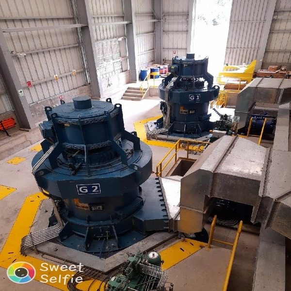

Servicio · Aforos de caudal
Aforos de caudal en canales, ríos y tuberías
Medimos en campo cuánta agua circula realmente por tu canal, río o tubería, con equipos adecuados a cada condición y un informe técnico que respalda tus decisiones y reportes.

Alcance del servicio de aforos de caudal
Canales y ríos
Aforo por área-velocidad con correntómetro en secciones de canales, ríos y quebradas.
Tuberías
Medición de caudal en tuberías a presión con métodos no invasivos según el diámetro y el material.
Estructuras de aforo
Lectura y verificación de vertederos, canaletas Parshall y otras estructuras de medición.
Verificación de medidores
Contraste de caudalímetros instalados para detectar desviaciones de lectura.
Campañas de medición
Aforos puntuales o campañas periódicas para seguimiento de caudales en época seca y húmeda.
Informe técnico
Metodología, registro fotográfico, cálculos, resultados y recomendaciones.
¿Dónde aplicamos este servicio?
- Monitoreo de agua en operaciones mineras
- Caudales para centrales hidroeléctricas
- Canales de riego y juntas de usuarios
- Control de consumo en plantas industriales
- Sustento para estudios y expedientes
- Calibración de modelos hidráulicos
¿Qué necesitamos para cotizar?
Con esta información te enviamos una propuesta más rápida y precisa. Si no la tienes completa, te ayudamos a levantarla.
- Ubicación y cantidad de puntos de aforo
- Tipo de punto (canal, río, tubería) y dimensiones aproximadas
- Frecuencia (aforo único o campaña)
- Accesos y requisitos de seguridad del sitio
- Formato de informe requerido
- Fecha estimada de medición
Dudas sobre aforos de caudal
¿Qué es un aforo de caudal?
Es la medición en campo del volumen de agua que pasa por una sección en un tiempo determinado, expresado normalmente en litros por segundo o metros cúbicos por segundo.
¿En qué tipos de cauces pueden aforar?
En canales revestidos y de tierra, ríos, quebradas, estructuras de medición como vertederos y en tuberías a presión, eligiendo el método según las condiciones del sitio.
¿Entregan un informe de resultados?
Sí. Cada servicio incluye un informe técnico con la metodología, los datos tomados, los cálculos, el registro fotográfico y los resultados.
¿Listo para empezar tu proyecto?
Cuéntanos qué necesitas y te respondemos con una propuesta técnica y económica.